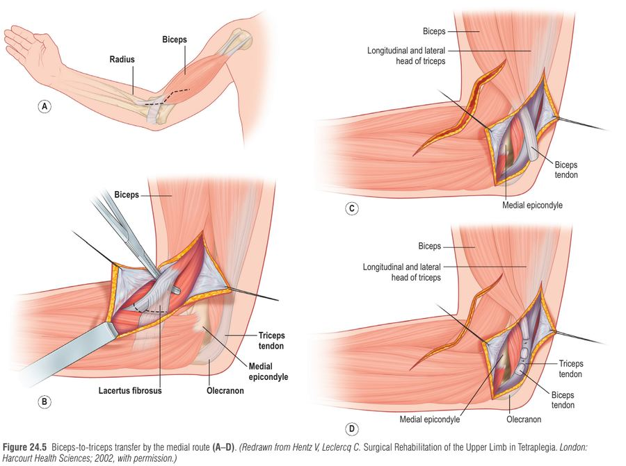
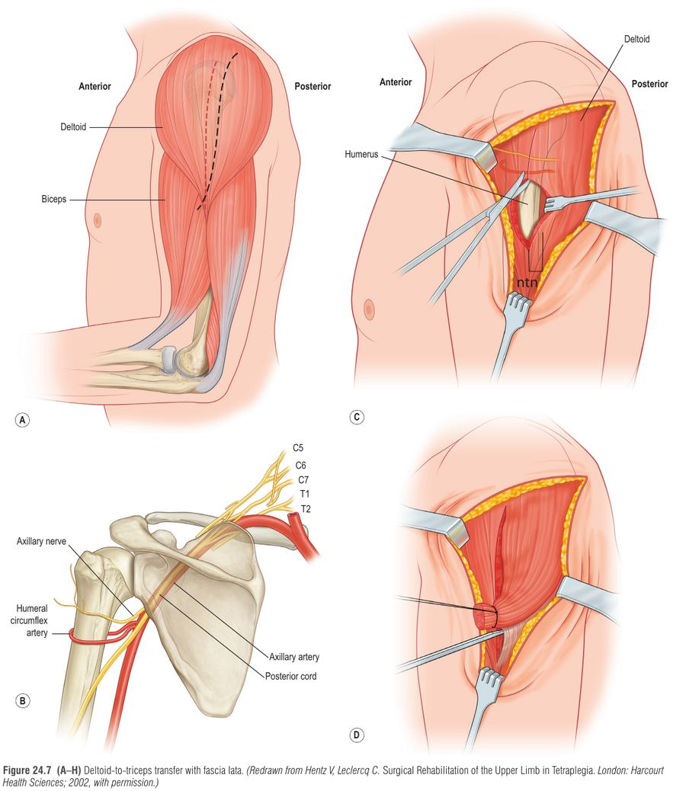
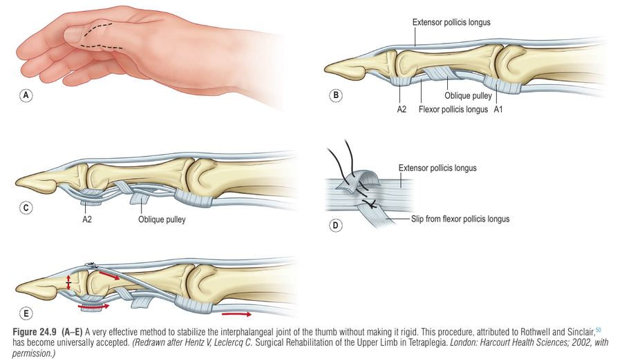
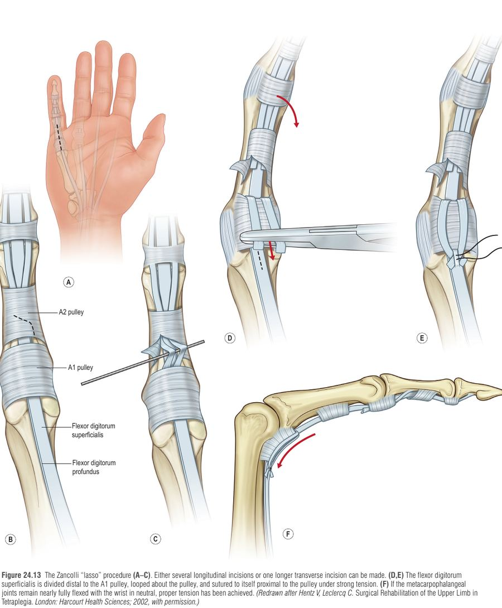
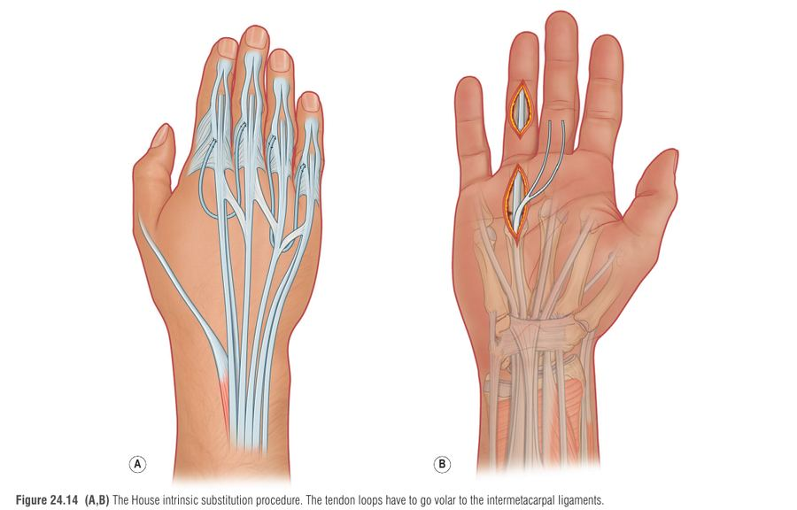

אחרי פגיעה בחוט השדרה הצווארי (cervical spinal cord injury, SCI) הגפה העליונה היא המשאב החשוב ביותר שנשאר למטופל, אחרי המוח: היא "הולכת" בשבילו – מניעה את הכיסא, מבצעת מעברים, מאכילה ומטפלת בהיגיינה. מטופלים עם טטרפלגיה מדרגים שליטה ביד ובזרוע כעדיפות הראשונה בשיקום. הפרק עוסק בשאלה אחת: איך מחליטים אילו שרירים עוד "שלנו" ואיך מנתבים אותם מחדש כדי להחזיר יד פונקציונלית – בעזרת חמישה כלים: arthrodesis, tenodesis, tendon transfer, nerve transfer וניתוחי הפחתת ספסטיות.
שרשרת סיבתית: פגיעה צווארית (הרמה השכיחה C5–6; סיבות: תאונות דרכים, נפילות – במיוחד בקשישים, ספורט) ← שרירים מעל הפגיעה עובדים, מתחתיה משותקים ← ככל שהפגיעה גבוהה יותר, פחות שרירים "תורמים" זמינים להעברה ← חייבים לסווג את הגפה לפי המשאבים שנותרו ולא לפי הרמה השלדית (כי גם באותו מטופל שתי הידיים שונות) ← כל פרוצדורה נבחרת לפי המשאבים האלה.
למה מעורבות מוקדמת של מנתח היד, אף שהניתוח עצמו נדחה? (1) מניעת מכווצים וכאב – אפילו מכווץ מרפק קל מפריע למעברים עצמאיים; (2) שמירה על הכתף, שכאבה שכיח מאוד באוכלוסייה זו; (3) חלון זמן צר להעברות עצב (ראו להלן); (4) טיפול בפגיעות נלוות.
איור סכמטי מקורי: ציר ההחלטה. החצים מימין (פגיעה) לשמאל (ניתוח), כיוון קריאה עברי.
הסיווג מבוסס על מספר השרירים מתחת למרפק עם כוח MRC 4 ומעלה. הסיבה: שריר דרגה 4 ניתן להעברה וצפוי לבצע עבודה שימושית; שריר דרגה 3 מאבד בהעברה כל כך הרבה כוח שאינו תורם אמין. בנוסף, השרירים "מאבדים דרגה" בעצם ההעברה – לכן התורם חייב להיות חזק מראש. לכל יד מצרפים גם תחושה (Moberg): Cu (cutaneous – יש פרופריוצפציה, הבדיקה: static 2-point discrimination קטן מ-12–15 מ"מ; היד נשלטת בלי לראות אותה) לעומת O (ocular – נדרש מבט עיניים). חוסר תחושה אינו קונטרא-אינדיקציה לניתוח: "יד בלי תחושה עם אחיזה שימושית עדיפה על יד בלי אחיזה".
| קבוצת IC | השריר החזק (MRC 4 ומעלה) הנוסף | תפקוד | גישה ניתוחית עיקרית |
|---|---|---|---|
| 0 | אין שריר מתחת למרפק | כיפוף/סופינציה של המרפק בלבד | העברות עצב; שחזור טריצפס |
| 1 | BR (brachioradialis) | BR בלבד | BR→ECRB, passive key pinch, טריצפס, nerve transfer |
| 2 | ECRL | פשיטת שורש כף (חלשה או חזקה) | BR→FPL (או FDP), passive key pinch, House, טריצפס, nerve transfers |
| 3 | ECRB | פשיטת שורש כף | כנ"ל לקבוצה 2 (חופפות 2–3) |
| 4 | PT (pronator teres) | פשיטה ופרונציה של שורש כף | Single-stage grip & release, טריצפס, nerve transfer |
| 5 | FCR | כיפוף שורש כף | כמו קבוצה 4 (ה-FCR חזק אך לא משתמשים בו להעברה) |
| 6 | פושטי אצבעות | פשיטה חיצונית של אצבעות | Grip & release; אפשרות EDM→APB; interossei פעילים |
| 7 | פושט אגודל | פשיטת אגודל | כנ"ל |
| 8 | מכופפי אצבעות חלקיים | כיפוף חלש | כנ"ל |
| 9 | חסרים רק אינטרינסיק | כיפוף אצבעות מלא | FDS IV→interossei (Stiles–Bunnell) |
| X | דפוס מעורב / ספסטיות | — | הארכת גידים, שחרור שרירים, ECU tenodesis |
אזהרה: אי אפשר לקבוע בבדיקה גופנית את כוח ה-ECRB בלי חשיפה כירורגית. לכן "סימן Bean" (חריץ בין בטני ה-ECRL וה-ECRB) או שימוש ב-PT פעיל משמשים להסקה, ובספק – בודקים תוך-ניתוחית.
| כלי | מה עושה | דוגמה בפרק |
|---|---|---|
| Arthrodesis | מייצב מפרק חסר שריר מייצב | איחוי CMC של האגודל |
| Tenodesis | "כבל פסיבי": תנועה פרוקסימלית (פשיטת שורש) מותחת גיד ומזיזה מפרק דיסטלי | FPL tenodesis (passive key pinch), ECU tenodesis, ELK |
| Tendon transfer | העברת כוח משריר "מיותר" בשליטה רצונית לתפקיד חסר | BR→ECRB, BR→FPL, ECRL→FDP, biceps/deltoid→triceps |
| Nerve transfer | העברת ענף מעצב תורם פעיל לשריר משותק | Supinator→PIN, brachialis→AIN |
| ניתוחי ספסטיות | הארכת גידים, שחרור שרירים, דנרבציה סלקטיבית | חשוב בטטרפלגיה חלקית |
| פרמטר | Tendon transfer | Nerve transfer |
|---|---|---|
| חיזוי תוצאה | צפוי וארוך טווח (הכלי "העבד" של התחום) | פחות צפוי; הנתונים עדיין מתפתחים |
| זמן עד תועלת | קצר | ארוך (המתנה לצמיחת אקסונים) |
| הגבלות אחרי ניתוח | קיבוע/הגנה של מספר שבועות | גבס/סד קל 2–3 שבועות |
| יתרון מיוחד | טכניקה ותיקה | האפשרות היחידה בפגיעות גבוהות; דורש בדיקות אלקטרודיאגנוסטיות מראש |
| חלון זמן | גם עשרות שנים אחרי | עם LMN injury – בתוך שנה |
הגישה המומלצת בפרק: שימוש בכל הכלים והתאמה אישית (העברות גיד ועצב בשילוב). אפילו יתרון לשתי ידיים שונות לאותו מטופל.
בלי פשיטה פעילה של המרפק הזרוע אינה יציבה במרחב: בשכיבה על הגב היד נופלת על הפנים (קשה לאכול ולהתרחץ), ואי אפשר לדחוף כיסא, לבצע מעבר מהמיטה או לשחרר לחץ (pressure relief למניעת פצעי לחץ). שחזור הפשיטה מרחיב את המרחב הנגיש בכ-30 ס"מ – כ-800% יותר מרחב תפקודי.
| פרמטר | Biceps-to-triceps | Deltoid-to-triceps (פשיטת מרפק מהדלטואיד האחורי) |
|---|---|---|
| מתי עדיף | מכווץ כיפוף מרפק מעל 45 מעלות (מסיר גם את הכוח המעוות) | כשרוצים לשמר את ה-biceps (למשל לקראת supinator→PIN) |
| גרפט | לא נדרש; אתר תיקון אחד | נדרש (fascia lata / hamstring / tibialis anterior וכד'); מנהרה באולקרנון |
| ניתוב | מדיאלי (מועדף בפרק – העצב האולנרי לרוב לא תקין; חייבים לשחרר arcade of Struthers) או לטרלי (סיכון ללחץ על עצב רדיאלי) | צריך לפחות שליש מהדלטואיד האחורי; להזהר מהעצב הרדיאלי (פגיעה נדירה אך הרסנית) והעצב האקסילרי |
| מתח | גיד נוגע באולקרנון במרפק כ-20 מעלות כיפוף | כתף בחטיפה 90 מעלות, מרפק ישר ככל האפשר, כמה שיותר מתוח |
| שיקום | גבס צילינדר 4 שבועות, בריח משתחרר ב-brace; שישה חודשי זהירות; תרגול סופינציה+פשיטה יחד | דומה, אך כתף מוחזקת בחטיפה (~30 מעלות) – לא לתת לכתף "ליפול" על החזה |
אסור לבצע גם biceps→triceps וגם supinator→PIN באותה זרוע: המטופל יישאר בלי סופינציה (ה-biceps הוא הסופינטור הנותר, ועצב ה-supinator מנותק מהשריר לצורך ההעברה). לכן אם מתכננים supinator→PIN – משחזרים טריצפס דרך הדלטואיד.


ב-IC 1 ה-BR הוא השריר היחיד ברמה 4. מעבירים אותו אל ה-ECRB (הפושט המרכזי) כדי להפוך את פשיטת השורש ל"מנוע" ליד האחיזה הפסיבית. נקודות מפתח: חשיפה רחבה (שחרור של 12–15 ס"מ נדרש לקבל תנועה של 4 ס"מ – Fridén), מתח לפי אורך מנוחה כשהמרפק בכיפוף ~40 מעלות. ה-BR יעיל כפושט שורש רק אם המרפק יציב – אחרת הוא מבזבז כוח על כיפוף המרפק. לכן עדיף לשחזר טריצפס לפני/בו-זמנית. סוג תפר: side-to-side עם חפיפה של 5 ס"מ, חזק פי 2 מאריגת Pulvertaft (כשל מעל 20 ק"ג) ומאפשר גיוס פעיל מוקדם.
איור סכמטי מקורי: חצי הזרימה מימין לשמאל; ראשי החץ בצד השמאלי (x קטן יותר) של כל קו.
| שלב | מה עושים ולמה |
|---|---|
| 1. ייצוב מפרק ה-IP של האגודל | Split FPL-to-EPL (Rothwell–Sinclair; חצי רדיאלי של FPL מועבר ונתפר ל-EPL) או ELK tenodesis (קיצור EPL). מונע קריסה של הקצה; לא איחוי כי איחוי IP הוביל לסיבוכים (כיום לא מבצעים). שומרים על ה-oblique pulley. |
| 2. איחוי CMC (אם יש רפיון) | המיקום קריטי: פד האגודל נוגע בפלנקס האמצעי של האינדקס; כ-20 מעלות palmar abduction וכמעט מקסימום radial abduction. אין לאחות CMC כשיש MCP נוקשה. עודף palmar abduction מפריע למעברים. איחוי = מיקום צפוי אך מגביל גודל חפצים בחלל הראשון. |
| 3. EPL tenodesis (אם אין פשיטת אגודל פעילה) | עיגון ל-3-4 compartment; האגודל נפשט מלא בכיפוף שורש 45 מעלות ופד נוגע באינדקס בשורש ניטרלי. |
| 4. BR→FPL | מנוע פעיל; מתח: מרפק 40 מעלות, שורש ניטרלי, אינדקס מכופף; BR מתוח למחצית בין מתיחה מרבית למנוחה. אל תשחרר A1 pulley אם MCP מתכופף מעל 45 מעלות. |
| 5. FPL tenodesis (passive key pinch, קבוצה 1–2 חלשה) | ה-FPL מנותק בצומת שריר-גיד, מעוגן לרדיוס דרך חור 3–4 מ"מ; בדיקה: בשורש ניטרלי פד האגודל בקושי נוגע באינדקס. |
בכל הפרוצדורות מניחים "תפר ניסיון" (test suture) לבדיקת המתח לפני סגירה סופית.

בעבר פעלו בשני שלבים (פתיחה, אחר כך סגירה). היום – שלב אחד במרכזים בעלי נפח, או supinator→PIN לפתיחה. סדר הפעולות:
למה ECRL ולא ECRB? שומרים לפחות פושט שורש אחד חזק. "שגיאה חמורה": להעביר ECRL ולהישאר בלי פשיטת שורש. הבטחה: PT פעיל, סימן Bean, או בדיקה תוך-ניתוחית בהרדמה מקומית – חושפים את ה-ECRB, מנסים לזוז את הגיד עם probe בזמן פשיטה חזקה; אם MRC 4–4+ הגיד אינו ניתן להסטה.
בלי אינטרינסיק: (1) מכופפים ארוכים מכופפים את כל המפרקים ללא סנכרון והאצבע "מתגלגלת" ונוגעת בבסיס כף היד במקום במרכזה – דוחפת חפצים גדולים החוצה; (2) פושטים חיצוניים לא מקבלים עזרה לפשיטת IP, MCP מתפשט יתר על המידה ונוצר claw hand (MCP בהיפראקסטנשן, IP בכיפוף). בדרך כלל אין מספיק שרירים להעברה דינמית, ולכן משתמשים בשיטות סטטיות:
| טכניקה | עיקרון |
|---|---|
| Zancolli lasso | ה-FDS משותק (UMN) אך עם טונוס ויסקואלסטי. הגיד נחתך דיסטלית ונלפף סביב A1/A2 ונתפר לעצמו במתח חזק ← הופך לכופף MCP. מותאם נכון אם MCP כמעט כפופים בשורש ניטרלי. |
| House intrinsic tenodesis | גרפט (PL או FDS טבעת) מפוצל; MCP 60 מעלות, IP ישרים; הלולאות עוברות volar ל-intermetacarpal ligament דרך lumbrical canal ונתפרות ל-lateral/central band. |
שיקום אחרי House: הגבלת כיפוף מלא 4 שבועות (מרחק אצבע-כף עד 3 ס"מ), עומס מלא אחרי 8 שבועות; אימון ממוקד משימות מתחיל כבר בשבוע 3.


קבוצות 6–9: EDM→APB (אבדוקציה וולרית), Stiles–Bunnell (FDS לטבעת מפוצל ל-interossei).
| פרוצדורה | תוצאה | סיבוכים |
|---|---|---|
| Deltoid→triceps | כוח ממוצע 3.3 MRC; יציב אחרי 10 שנים | כ-25% (נפוץ: קרע/מתיחת התיקון); שיקום נכון ותפר side-to-side מצמצמים |
| Pinch (FPL tenodesis / BR→FPL) | ממוצע 1.9 ק"ג (1.17 מול 2.32) | כ-40%: מכווץ מרפק/אגודל, מתיחה/קרע, התרופפות פינים ב-IP (לא רלוונטי כיום) |
| Single-stage מול דו-שלבי | Grip 6.5 מול 1.6 ק"ג; פתיחה 5.5 מול 3.0 ס"מ; pinch דומה (2.8 מול 2.0 ק"ג) | נדירים אם עוקבים אחרי הפרוטוקול |
| Supinator→PIN | MRC ממוצע 4.16 | — |
סיבוכים כלליים: קרע/מתיחת העברה, מכווצים, התרופפות קיבוע, פצעי לחץ והסתבכות חברתית אם לא הוכנו מראש לתקופת התלות. מעקב ארוך (Hentz): ניתוחי מרפק שמרו על שימוש ב"כיסא דחיפה" ב-10 שנים לחלק מהחולים.
Arthrodesis (איחוי) · Tenodesis · Tendon transfer · Nerve transfer · Spasticity surgery.
סיפור: מטופל בכיסא גלגלים מגיע לתור, והצוות כולו "attends" אליו: הנגר מבריג (איחוי), החבלן קושר חבל (טנודזיס), הנהג מעביר הילוך (העברת גיד), החשמלאי מחבר כבל (העברת עצב), והשוטר מרגיע מהומה (ספסטיות).
סדר IC 1–5: BR, ECRL, ECRB, PT, FCR – "Big Elbows Enable Push Forward": מכל שריר חדש נוספת יכולת (BR → ECRL → ECRB → PT → FCR). מנמונית מקורית.
איור סכמטי קליל: חמש מדרגות עולות לעצמאות (מימין לשמאל כפי שקוראים).
לא הוטמעו סרטונים בסיכום זה כדי לא לקשר למקור שלא נבדק.
גבר בן 26, צלילה למים רדודים לפני 7 חודשים, פגיעה צווארית C6, נע בכיסא ידני. בבדיקה: אין פשיטה פעילה של המרפק, ידיו נופלות על פניו בשכיבה על הגב ואינו מצליח לבצע pressure relief. ה-BR, ה-ECRL וה-ECRB בדרגה 4 (נראה חריץ בין שני הפושטים – סימן Bean), ה-PT חזק, אין פשיטה פעילה של האצבעות. 2PD בצביטה 9 מ"מ. אין מכווץ מרפק. אלקטרודיאגנוסטיקה תקינה של ענפי ה-PIN. המטופל מבקש "לאכול לבד ולהחזיק כוס".